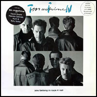
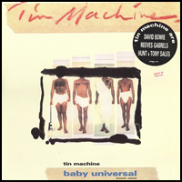
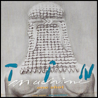
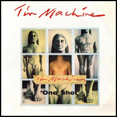

A charcoal sketch of an ancient Greek statue, the Kroisos Kouros, drawn by Edward Bell and repeated four times, like a pop-art screen print, should have made for a relatively benign album cover. In the US, however, the genitalia on Tin Machine II's sleeve had to be airbrushed out. A number of David Bowie album covers have caused controversy over the years (and this wasn't even the first one to feature censor-baiting genitalia). Bowie briefly considered giving fans the opportunity to write to the group's record label in order to ask for the censored images to be mailed to them, so "they could paste them back on", he told Creem magazine. But the label "freaked out at the idea. Sending genitals through the mail is a serious offence."
Illustrator: Edward Bell
BABY UNIVERSAL
Baby Baby Baby Baby
Baby (getting)
Baby (care)
Baby (talking)
Baby (well)
Baby (thinking)
Baby (walk)
Baby (lost)
Baby (found)
Baby (getting)
Baby (care)
Baby (talking)
Baby (well)
Baby (thinking)
Baby (walk)
Baby (lost)
Baby (found)
Baby (getting)
Baby (care)
Baby (talking)
Baby (well)
Baby (thinking)
Baby (walk)
Baby (lost)
Baby (found)
Now that he has no sense of destination
Now he's running for the love of speed
When the child goes bad it's no cause for celebration
Like Jimmy Dean he don't talk back to me
Failures as fathers, Mothers to chaos
No baby, no baby, no baby no
[CHORUS]
Hallo humans can you feel me thinking
I assume you're seeing everything I'm thinking
Hallo humans nothing starts tomorrow
I'm the baby now
Baby [repeat]
(getting)
(care)
(talking)
(well)
(thinking)
(walk)
(lost)
(found)
Baby Universe
Baby Universe
Baby Universal
(Talking well)
(Talking well)
A speck of dust just settled in my eye
It doesn't matter I've seen everything anyway
Failures as fathers, mothers to chaos
No baby, no baby, no baby no
[CHORUS]
ONE SHOT
The last days were the meanest
Leanest days of our lives
You threw me the pieces
I started the fire
One thing led to a dead end
One shot put her away, hey-hey
Look out on a green world
Windows and wives
No bedroom to run to
No miracle jive - no conversation
Then nothing meant nothing
Ten dollars tore us apart
One thing led to a dead end
One shot put her away
One day nothing meant nothing
Ten dollars tore us apart
One thing led to a dead end
One shot put her away
The last days were the meanest
Leanest days of our lives
One thing led to a dead end
One shot further away
Looked out on a green world
Windows and wives
No bedroom to run to
No miracle jive - no conversation
Hot love is the dearest
No money can buy
She burnt like a spitfire
One shot put her away
One shot put her away, heh-heh
One shot put her away, uh-huh-huh...
One shot put her away
YOU BELONG IN ROCK 'N' ROLL
Just the twinkling lights of heaven
Two reflections on the sparkling water
Hand in hand in love with love uh-huh
I love the cheap things that you say-a-say
You belong in rock 'n' roll
You belong in rock 'n' roll
You belong in rock 'n' roll
Well so do I
I love how she moves me
It makes me feel alright, alright, alright, alright
I'm a hurt, I'm a hurt, I'm a hurting
I'm a man with a beat in my pocket
I'm going down to the rhythm of love
I love the bad luck that you bring-r-ing
You belong in rock 'n' roll
You belong in rock 'n' roll
You belong in rock 'n' roll
Well so do I
Alone on a mean street
It makes me feel on fire, on fire, on fire, on fire, on fire...
On fire, on fire, on fire, on fire, on fire
I love the cheap street in your walk, uh-huh
You belong in rock 'n' roll
You belong in rock 'n' roll
Well so do I
I love how she moves me
It makes me feel alright, alright, alright, alright, alright...
If there is something
That I might find
Look around corners
Try to find peace of mind, I say
"Where would you go
If you were me?
Trying to keep a straight course is not easy"
Somebody special
Looking at me
Same kind of reaction
Wanted to cry with me
If there are many
Too easy to say
When it's love
It's just a game-ame-ame-ame
I would do anything for you
I would come all day
I would swim all the oceans blue
I would walk a thousand miles
Reveal my secrets
More than enough for me to share
I will put roses around your door
Sit in the garden
Growing potatoes by the score
Shake your head girl, with your ponytail
Takes me right back (when you were young)
Throw your precious gifts into the air
Watch them fall down (when you were young)
Your love - could feel you put them on the ground
It used to fall apart (when you were young)
Your love - could feel you put them on the ground
The hills were higher (when you were young)
Your love - could feel you put them on the ground
The trees were taller then (when you were young)
Your love - could feel you put them on the ground
The grass was greener (when you were young)
Your love - could feel you put them on the ground
It use to fall apart (when you were young)
IF THERE IS SOMETHING
If there is something
That I might find
Look around corners
Try to find peace of mind, I say
"Where would you go
If you were me?
Trying to keep a straight course is not easy"
Somebody special
Looking at me
Same kind of reaction
Wanted to cry with me
If there are many
Too easy to say
When it's love
It's just a game-ame-ame-ame
I would do anything for you
I would come all day
I would swim all the oceans blue
I would walk a thousand miles
Reveal my secrets
More than enough for me to share
I will put roses around your door
Sit in the garden
Growing potatoes by the score
Shake your head girl, with your ponytail
Takes me right back (when you were young)
Throw your precious gifts into the air
Watch them fall down (when you were young)
Your love - could feel you put them on the ground
It used to fall apart (when you were young)
Your love - could feel you put them on the ground
The hills were higher (when you were young)
Your love - could feel you put them on the ground
The trees were taller then (when you were young)
Your love - could feel you put them on the ground
The grass was greener (when you were young)
Your love - could feel you put them on the ground
It use to fall apart (when you were young)
AMLAPURA
Hey-hey it's the tall sail
On a beach reach for java
Make way for to Java
Watching for Boogies
Hey-hey it's a dreaming
I would burn you if you should die
Hey-hey I would burn too
If you should lie upon that bamboo pyre
I dream of Amlapura
Never saw in all my life a more shining jewel
I dream of Amlapura
Of an ocean or dream of a princess in stone
Hey-hey golden roses around
A rajah's mouth
Hey-hey all the dead children buried standing
A flying Dutchman
Smoking gun and spice wind
I dream of Amlapura
Never saw in all my life a more shining jewel
I dream of Amlapura
Of an ocean or dream of a princess in stone
I dream of Amlapura
Of a princess in stone
Hey-hey it's a tall ship
Hey-hey
Hey-hey
Amlapura
BETTY WRONG
Till the sun blisters and sprays
And every lamb ceases to graze
When the kiss of the comb
Tears my face from the bone
I'll be your light
When the shadows fall down the walls
Then life will be done
And it just won't matter at all
I was caught from a hand
Nurtured on grime, goodwill and screams
Now your breath fills my step
Now there is you till life is gone
I'll be your light
When the shadows fall down the walls
Then life will be done
And it just won't matter at all
I'll roll your ball
Till the stars can't make me cry
Then life will be done
And it just won't matter at all
Not at all
When the kiss of the comb
Tears my face
YOU CAN'T TALK
Beauty shrieks "Beast in booties"
Coming home so lay the table
Look at you calling shots
Call you over under out
I was under, backwards, forwards
Holding hands in the dark
Kissing some, kissing cousins
Kissing this in cover
Kissing cousins, kissing that
Over under out
Over under out
Over under out
You can't talk
You can't see me drowning
You can't talk
I don't see you swimming
You can't talk
You want go your way
You can't talk
I know you don't love me
Look at this heart's a poppin'
Guess it's over
Crazy action mine's a breakin'
Guess it's over
(Here we go)
You can't talk
You can't see me drowning
You can't talk
I don't see you swimming
You can't talk
You want go your way
You can't talk
I know you don't love me
Beauty shrieks 'Beast in booties'
Coming home so lay the table
Look at you calling shots
Call you over under out
I was under, backwards, forwards
Holding hands in the dark
Kissing some, kissing cousins
Kissing this
You can't talk
You can't see me drowning
You can't talk
I don't see you swimming
You can't talk
You want go your way
You can't talk
I know you don't love me
You can't talk
You can't see me drowning
You can't talk
I don't see you swimming
You can't talk
You want go your way
You can't talk
I know you don't love me
You can't talk
You can't talk
I know you don't love me...
STATESIDE
I'm going home
I've been gone much too long
She said she missed me
Since I been gone
I'll be back soon
Ain't no doubt
'Cause she said she wanted my loving, my loving
No holding back I'm going home
No holding back I'm going home
I'm going stateside with my convictions
No holding back I'm going home
No holding back I'm going home
I'm going stateside with my convictions
I said I'm coming home soon
I don't know when
It will be sometime soon
Sooner than
I thought I'd be
I thought I'd be
I thought I'd be stateside sooner than later
Marilyn inflatables home on the range
Where the living is easy on a horse with no name
Kennedy convertibles home on the range
Where the suffering comes easy on a blonde with no brain
I'm going stateside
I'm going stateside
I'm going home
It's been so long
She said she missed me
And all the fun we've had
I think it be the best way
She said she missed me in
Every, every way, so
No holding back I'm going home
No holding back I'm going home
I'm going stateside with my convictions
No holding back I'm going home
No holding back I'm going home
I'm going stateside with my convictions
I've been gone so long
I've been gone, I've been gone
I'm missing you
Marilyn inflatables home on the range
Where the living is easy on a horse with no name
Kennedy convertibles home on the range
Where the suffering comes easy on a ten dollar raise
I'm going stateside
I'm going stateside
SHOPPING FOR GIRLS
Between the dead ring ash of extreme defense
The lonely groups of company boys
Snapping pictures of scrawny limbs and toothy grins
These are children riding naked on their tourist pals
While the hollows that pass for eyes swell from withdrawal
And he lies on a mattress in a rat infested room
Talking 'bout his family and the cold back home
Between the dull cold eyes and the mind unstable
Noone over here reads the papers pal
'Tween the dull cold eyes and the mind unstable
He's a clean trick and he's shopping for girls
A small black someone jumps over the crazy white guard
Cranking up the volume of a Michael Jackson song
Between the dull cold eyes and the mind unstable
Noone over here reads the papers pal
'Tween the dull cold eyes and the mind unstable
He's a clean trick and he's shopping for girls
Where the frangipani scents the air
She mouths a word that breaks his stare
He grunts his reply in a garrulous croak
"That's a mighty big word for a nine year old"
Between the dull cold eyes and the mind unstable
Noone over here reads the papers pal
'Tween the dull cold eyes and the mind unstable
He's a clean trick and he's shopping for girls
Shopping for girls, shopping for girls
You gaze down into her eyes for a million miles
You wanna give her a name and a clean rag doll
A BIG HURT
To meet her once just to know it through and through
I know, I know
But it ain't finished till the fat lady sings
I know, I know
How can I help you?
You're just a wanna-be
I'm a believer
You're a sex receiver
And me with a big hurt
You know I had a big hurt
From the very start
I'm hurting so bad
'Cause you're my room-mate from hell
Got to take some blows on the stepping stones
Speak in extremes
It'll save you time
You were a saint abroad
But a devil at home
Come on here, woo-woo
And kiss it for me
To meet her once just to know it through and through
I know, I know
Even a glass eye in a duck's ass can see that
I know, I know
How can I help you?
I'm hit with a big hurt
You know I had
A great big hurt
From the very start
I'm hurting so bad
And here come the indians oooo
Got to take some blows on the stepping stones
Speak in extremes
It'll save you time
You were a saint abroad
But a devil at home
Come on here, woo-woo
And kiss it for me
Kiss it for me, woo-woo
Kiss it for me
Woo-woo, kiss it for me
Come on here, woo-woo
Kiss it for me
Kiss it where it counts
Kiss it for me
Come on here, woo-woo
Woo-woo, woo-woo, woo-woo, woo-woo
Kiss it for me
I know
SORRY
Time is tight love always gets in the way
I'm sorry
Didn't mean to hurt you but I always do
I'm sorry
I'm so sorry
I'm so sorry
I'm sorry
You know I am
Well my eyes are pinned and my money's spent
I'm sorry
You know I'm sorry
I wouldn't do for me what I would for for you
Would you forgive me
I'm sorry
I'm so sorry
I guess I've thrown it away
I've thrown it away
Didn't mean to do it that way
I'm sorry
Time is so tight
And I mean it if I say
I'm so sorry
I didn't mean to hurt you
I'm sorry
I'm sorry
I'm sor-rrr-ry
You know I am
GOODBYE MR. ED
The ghost of Manhattoes
Shrieking as they fall
From AT&T
Someone sees it all
Goodbye Mr. Ed
Andy's skull enshrined
In a shopping mall near Queens
Someone sees it all
Icarus takes his pratfall
Bruegel on his head
Goodbye Mr. Ed
Four and twenty black kids
Some of them are blind
Someone sees it all
Tolerance of violence
By the fellows with no heads
Goodbye Mr. Ed
Some things are so big
They make no sense
Histories so small
People are so dense
Someone sees it all
Goodbye Mr. Ed
Some things are so big
They make no sense
Histories so small
People are so dense
Someone sees it all
Goodbye Mr. Ed
Never mind the Pistols
They laid the Golem eggs
Others came to hatch them
Outside the pale
Someone sees it all
Goodbye Mr. Ed
SINGLES



